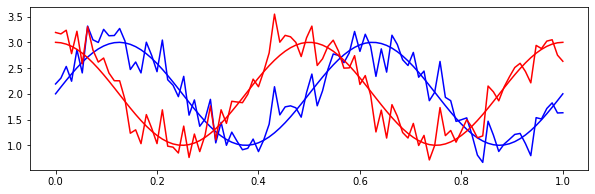
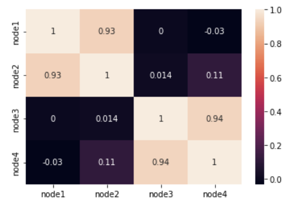
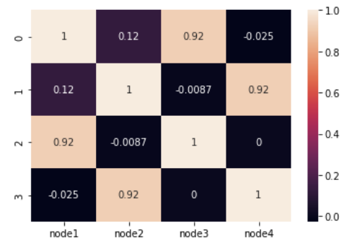
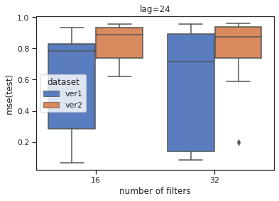
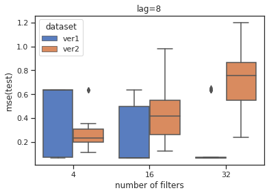

Toy Example
t = np.linspace(0,1,96)
noise = np.random.normal(0, 0.3, len(t))
x1 = np.sin(4*np.pi*t) + 2
x2 = x1 + noise
x3 = np.cos(4*np.pi*t) + 2
x4 = x3 + noise
plt.figure(figsize=(10,3))
plt.plot(t,x1, color='blue')
plt.plot(t,x2, color='blue')
plt.plot(t,x3, color='red')
plt.plot(t,x4, color='red')
plt.show()
| node1 | node2 | node3 | node4 | |
|---|---|---|---|---|
| 0 | 2.000000 | 2.191496 | 3.000000 | 3.191496 |
| 1 | 2.131892 | 2.304474 | 2.991264 | 3.163845 |
| 2 | 2.261480 | 2.531197 | 2.965209 | 3.234926 |
| 3 | 2.386499 | 2.244653 | 2.922290 | 2.780443 |
| 4 | 2.504766 | 2.856344 | 2.863256 | 3.214835 |
| node1 | node2 | node3 | node4 | |
|---|---|---|---|---|
| node1 | 1.0000 | 0.9295 | 0.0000 | -0.0300 |
| node2 | 0.9295 | 1.0000 | 0.0137 | 0.1141 |
| node3 | 0.0000 | 0.0137 | 1.0000 | 0.9361 |
| node4 | -0.0300 | 0.1141 | 0.9361 | 1.0000 |
cor2 = pd.DataFrame({'node1':[1.0000,0.1238,0.9172,-0.0250], 'node2':[0.1238, 1.0000, -0.0087, 0.9172], 'node3':[0.9172,-0.0087, 1.0000, 0.0000], 'node4':[-0.0250,0.9172,0.0000,1.0000]})
cor2| node1 | node2 | node3 | node4 | |
|---|---|---|---|---|
| 0 | 1.0000 | 0.1238 | 0.9172 | -0.0250 |
| 1 | 0.1238 | 1.0000 | -0.0087 | 0.9172 |
| 2 | 0.9172 | -0.0087 | 1.0000 | 0.0000 |
| 3 | -0.0250 | 0.9172 | 0.0000 | 1.0000 |
[[0, 0], [0, 1], [0, 2], [0, 3], [1, 0], [1, 1], [1, 2], [1, 3], [2, 0], [2, 1], [2, 2], [2, 3], [3, 0], [3, 1], [3, 2], [3, 3]]- Winmilldataset 뜯어보니 일단 다 연결은 해놓은 듯 하다(length: 노드x노드)
- Windmill에서는 자기자신과 연결해놨음. -> 자기자신과의 가중치 1로줬음
- 혹시모르니까 두 개 다 만들어보자..
Create Dataset
- SELF-LOOP (X)
자기자신과 연결X (즉, 가중을 0으로 줌)
{'node1': 0, 'node2': 1, 'node3': 2, 'node4': 3}- SELF-LOOP
자기자신과 연결 (가중치를 1로)
LRNR
<module 'eptstgcn' from '/home/jy/Dropbox/noteda/posts/SOLAR/eptstgcn/__init__.py'>lrnr = eptstgcn.StgcnLearner(train_dataset, dataset_name = 'ver1')
lrnr2 = eptstgcn.StgcnLearner(train_dataset2, dataset_name = 'ver2')/home/jy/Dropbox/noteda/posts/SOLAR/eptstgcn/learners.py:50: UserWarning: Creating a tensor from a list of numpy.ndarrays is extremely slow. Please consider converting the list to a single numpy.ndarray with numpy.array() before converting to a tensor. (Triggered internally at /opt/conda/conda-bld/pytorch_1678402421473/work/torch/csrc/utils/tensor_new.cpp:245.)
self.lags = torch.tensor(train_dataset.features).shape[-1]VISUALIZATION
SELF-LOOP X
| 구분 | mse(train) | mse(test) |
|---|---|---|
| 가중치 잘 준 버전 | 0.07 | 0.07 |
| 가중치 이상하게 | 0.18 | 0.29 |
| 가중치 잘 준 버전(+self-loop) | 0.07 | 0.07 |
| 가중치 이상하게(+self-loop) | 0.35 | 0.62 |
VER1.노드1,2 // 노드3,4

VER2. 노드1,3 // 노드2,4

SELF-LOOP
그냥해본거.. 뭐가 달라지나?
VER1. 노드1,2 // 노드3,4
VER2. 노드1,3 // 노드2,4
- 노드1,2//노드3,4(ver1) 은 잘맞추는데 노드1,3//노드2,4(ver2)는 너무 잘 못맞춘다.
- 애초에 가중치가 이상하지만 않으면 self-loop 여부는 상관없나..?//
SIMULATION
{'max_iteration': 50,
'method': ['Ver1'],
'lags': [4, 8, 24],
'nof_filters': [4, 16, 32],
'epoch': [50]}plnr.simulate()
eptstgcn.save_data(plnr, './toy_example/model/ver1_50.pickle')
simul_model1 = eptstgcn.load_data('./toy_example/model/ver1_50.pickle')
plnr2.simulate()
eptstgcn.save_data(plnr2, './toy_example/model/ver2_50.pickle')
simul_model2 = eptstgcn.load_data('./toy_example/model/ver2_50.pickle')8/500# plnr2.simulate()
# eptstgcn.save_data(plnr2, './toy_example/model/ver2.pickle')
simul_model2 = eptstgcn.load_data('./toy_example/model/ver2.pickle')1/10 is done
2/10 is done
3/10 is done
4/10 is done
5/10 is done
6/10 is done
7/10 is done
8/10 is done
9/10 is done
10/10 is done
All results are stored in ./simulation_results2/2023-05-25_01-01-01.csvSIMUL RSLT
| mse(train) | mse(test) | |||
|---|---|---|---|---|
| mean | mean | |||
| dataset | lags | nof_filters | ||
| ver1 | 4 | 4 | 0.346585 | 0.421048 |
| 16 | 0.185707 | 0.215630 | ||
| 32 | 0.149700 | 0.169794 | ||
| 8 | 4 | 0.247699 | 0.287386 | |
| 16 | 0.188226 | 0.216940 | ||
| 32 | 0.171670 | 0.198291 | ||
| 24 | 4 | 0.475715 | 0.533466 | |
| 16 | 0.508558 | 0.628824 | ||
| 32 | 0.437186 | 0.528981 | ||
| ver2 | 4 | 4 | 0.198067 | 0.273033 |
| 16 | 0.277824 | 0.443603 | ||
| 32 | 0.395268 | 0.711337 | ||
| 8 | 4 | 0.370275 | 0.498099 | |
| 16 | 0.330516 | 0.523799 | ||
| 32 | 0.498863 | 0.835114 | ||
| 24 | 4 | 0.547656 | 0.629164 | |
| 16 | 0.644082 | 0.822642 | ||
| 32 | 0.667854 | 0.882245 |
ver1은 정상적으로 가중치 준 것, ver2는 바꿔서 준 것
lag=4일때 filter 개수에 따른 결과 비교 (10iter)
lag=8
lag=24
sns.set_theme(style="ticks", palette="muted")
sns.boxplot(x='nof_filters', y='mse(test)',
hue='dataset', data=df.query('lags==24')).set_title('lag=24')
plt.xlabel('number of filters')
plt.show()
v1_50.groupby(["lags","nof_filters"])\
.agg({"mse(train)":["mean","median","var"], "mse(test)":["mean","median","var"],'calculation_time':['sum','mean']})| mse(train) | mse(test) | calculation_time | |||||||
|---|---|---|---|---|---|---|---|---|---|
| mean | median | var | mean | median | var | sum | mean | ||
| lags | nof_filters | ||||||||
| 4 | 16 | 0.203302 | 0.071566 | 0.046018 | 0.238079 | 0.067988 | 0.075294 | 83.420576 | 8.342058 |
| 32 | 0.203074 | 0.070812 | 0.046093 | 0.237319 | 0.066579 | 0.075600 | 85.480419 | 8.548042 | |
| 8 | 16 | 0.208774 | 0.077561 | 0.048580 | 0.242185 | 0.073564 | 0.074351 | 80.206197 | 8.020620 |
| 32 | 0.167494 | 0.076533 | 0.036563 | 0.195896 | 0.085546 | 0.056072 | 82.646845 | 8.264684 | |
| 24 | 16 | 0.487882 | 0.623334 | 0.069463 | 0.607180 | 0.782145 | 0.128149 | 66.902302 | 6.690230 |
| 32 | 0.454677 | 0.591379 | 0.078390 | 0.562315 | 0.717421 | 0.146721 | 68.364078 | 6.836408 | |
v2_50.groupby(["lags","nof_filters"])\
.agg({"mse(train)":["mean","median","var"], "mse(test)":["mean","median","var"],'calculation_time':['sum','mean']})| mse(train) | mse(test) | calculation_time | |||||||
|---|---|---|---|---|---|---|---|---|---|
| mean | median | var | mean | median | var | sum | mean | ||
| lags | nof_filters | ||||||||
| 4 | 16 | 0.270099 | 0.197572 | 0.021389 | 0.385965 | 0.291621 | 0.039849 | 84.393474 | 8.439347 |
| 32 | 0.436947 | 0.395700 | 0.016427 | 0.801823 | 0.728309 | 0.062253 | 86.539382 | 8.653938 | |
| 8 | 16 | 0.371500 | 0.371881 | 0.019880 | 0.600256 | 0.571632 | 0.058193 | 80.423489 | 8.042349 |
| 32 | 0.530456 | 0.575158 | 0.029743 | 0.908404 | 1.006246 | 0.103950 | 83.455680 | 8.345568 | |
| 24 | 16 | 0.657809 | 0.686948 | 0.004564 | 0.834080 | 0.890464 | 0.014996 | 67.670547 | 6.767055 |
| 32 | 0.598124 | 0.678536 | 0.033717 | 0.787052 | 0.876851 | 0.056928 | 69.286567 | 6.928657 | |
filter = 4 추가, 50iter
sns.set_theme(style="ticks", palette="muted")
sns.boxplot(x='nof_filters', y='mse(test)',
hue='dataset', data=df.query('lags==4')).set_title('lag=8')
plt.xlabel('number of filters')
plt.show()